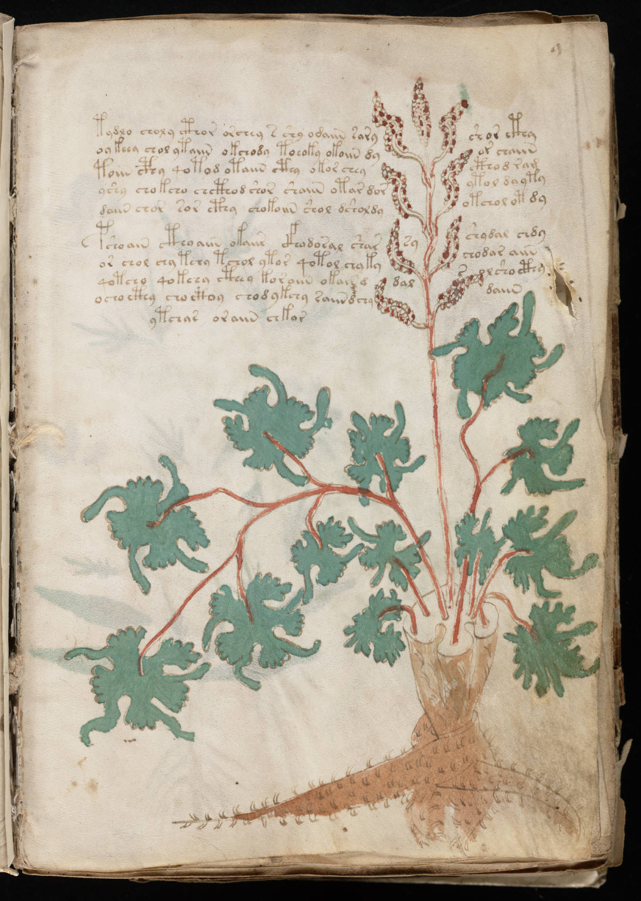

f9r
1tydlo choly cthor orchey s shy odaiin saryshor cthy2oykeey chol ytaiin okchody toeoky okoiin dyor chaiin3toiin cphy qotod otaiin cthy okor cheycthod ram4yshy chokcho chcthod shor shaiin otar dorytol dayty5daiin chor sor cthy chokoiin shol dsholdyotchol ot dy6pshoain cthyaiin okaiir cfhodoral sharsyshydal chdy7or chol chytchy tchol ytor qotol chykychodar aiin8qotcho qokchy cthey koraiin okain d dalsolsho cthy9ocho cthy choctoy chodykchy saiin dchydaiin10ytchas oraiin chkar
